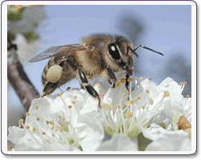
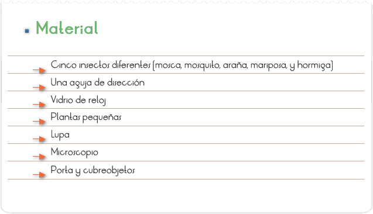
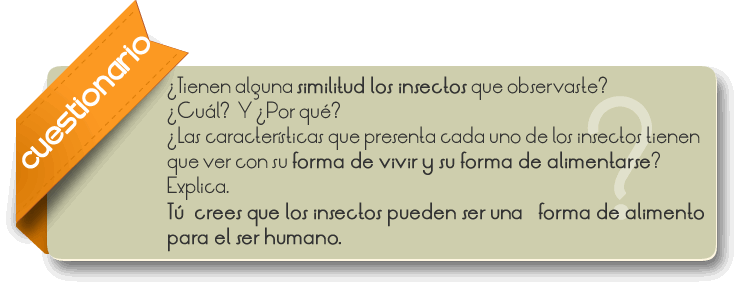
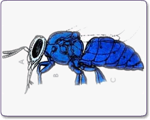

Los insectos (Insecta, en latín, literalmente "cortado en medio") son una clase de animales invertebrados, del filo de los artrópodos, caracterizados por presentar un par de antenas, tres pares de patas y dos pares de alas (que, no obstante, pueden reducirse o faltar), La ciencia que estudia los insectos se denomina entomología. Los insectos comprenden el grupo de animales más diverso de la Tierra, con más de 800.000 especies descritas, más que los otros grupos de animales juntos. Los insectos se pueden encontrar en casi todos los ambientes del planeta, aunque sólo un pequeño número de especies se ha adaptado a la vida en los océanos. Hay aproximadamente 5.000 especies de odonatos (libélulas, caballitos del diablo), 20.000 de ortópteros (saltamontes, grillos), 120.000 de lepidópteros (mariposas y polillas), 120.000 de dípteros (moscas, mosquitos), 82.000 de hemípteros (chinches, pulgones, cigarras), 350.000 de coleópteros (escarabajos, mariquitas), y 110.000 especies de himenópteros (abejas avispas, hormigas).
Los insectos no solo son diversos sino también increíblemente abundantes; se estima que hay 200 millones de insectos por cada ser humano. Algunos hormigueros contienen más de 20 millones de individuos; se calcula que hay 1015 hormigas viviendo sobre la Tierra; en la selva amazónica se estima que hay unas 60.000 especies y 3,2 x 108 individuos por hectárea; en un acre (poco más de 4.000 m2) de suelo inglés hay casi 18 millones de coleópteros. Los artrópodos terrestres como los ciempiés, milpiés, escorpiones y arañas se confunden a menudo con los insectos debido a que tienen estructuras corporales similares, pero son fácilmente diferenciables ya que los insectos presentan tres pares de patas mientras que los escorpiones y arañas tienen cuatro pares y carecen de antenas, y los ciempiés y milpiés tienen muchos pares de patas.

Que el alumno identifique las partes del cuerpo que forman a los insectos.

1. Coloca el primer insecto sobre el vidrio de reloj y con ayuda de la lupa realiza una observación minuciosa de cada una de las partes de su cuerpo. Recuerda que se divide en tres partes (cabeza, abdomen y tórax).
2. Realiza observaciones de las alas, utiliza el objetivo de menor aumento y dibuja.
3. Ahora con ayuda de la lupa revisa cada una de sus antenas y dibújalas.
4. Realiza lo mismo con el resto de los insectos.

Los insectos se encuentran en todas partes, desde el trópico hasta los polos, sobre la tierra, en el aire, y dentro del agua. Imagínate, ¡más de las tres cuartas partes de los animales conocidos son insectos!
Después de sumar y sumar, se llegó a la conclusión de que hay más de un millón de especies repartidas por todo el mundo.
Los científicos han clasificado a los insectos como artrópodos, palabra que significa "patas articuladas". Y, como los insectos son tantos, decidieron agruparlos en treinta y tres órdenes, según las características de sus miembros y órganos, que son muy variados.
Veamos cómo son; tienen cabeza (A), tórax (B) y abdomen(C), y un esqueleto exterior los cubre como si fuera una armadura.
